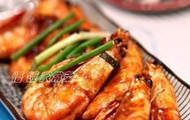
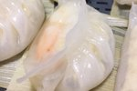

视频

可乐鸡翅独家步骤图
鸡翅(翅中最佳)、可乐、盐、料酒...
综合评分8.2 (七天内222人做过)
泽与
懒人版糖醋排骨独家步骤图
猪小排、盐、料酒、米醋、白...
综合评分8.5 (七天内183人做过)
小慈xiaoci
鱼香肉丝独家步骤图
瘦肉、黑木耳、胡萝卜、青椒、豆瓣...
综合评分8.3 (七天内226人做过)
銘姥姥

油焖大虾独家步骤图
对虾、姜、蒜、香葱、白糖、番茄酱...
综合评分8.7 (七天内222人做过)
悟饭
糖醋里脊独家步骤图
猪里脊、白糖、番茄酱、鸡蛋、姜...
综合评分8.0 (七天内63人做过)
apple爱自己
麻婆豆腐独家步骤图
花椒末、豆腐、豆瓣、肉末、花...
综合评分7.8 (七天内79人做过)
大花花西瓜瓜
红烧排骨独家步骤图
排骨、姜、蒜、香葱、盐、老抽...
综合评分8.1 (七天内67人做过)
恩泽宝贝
鱼香肉丝独家步骤图
猪肉腿、泡椒、姜、蒜、葱、水发木...
综合评分8.3 (七天内222人做过)
labrador
可乐鸡翅独家步骤图
鸡翅、干红辣椒、可乐、老抽
综合评分8.1 (七天内44人做过)
希洛大大大大人

蒸水蛋独家步骤图
鸡蛋、盐、酱油、油、温水、葱花...
综合评分8.0 (七天内36人做过)
凉小静的食物恋
锅里的红烧肉独家步骤图
五花肉、八角、花椒、香叶、干辣椒...
综合评分8.6 (七天内41人做过)
小羽私厨
私房大盘鸡独家步骤图
鸡、土豆、洋葱、青椒、干红辣椒、...
综合评分8.4 (七天内51人做过)
希洛大大大大人
阿婆手撕包菜 独家步骤图
圆白菜、干红椒、五花肉、大蒜、生...
综合评分7.9 (七天内50人做过)
圆猪猪
干煸菜花独家步骤图
松花菜、五花肉、生姜、大蒜、辣椒...
综合评分7.9 (七天内39人做过)
宅与路上
青椒素炒杏鲍菇独家步骤图
青椒、杏鲍菇、大蒜瓣、生抽、老抽...
综合评分7.9 (七天内64人做过)
Saikouu
蜜汁鸡翅 独家步骤图
鸡翅、蒜、姜、料酒、生抽、蜂蜜
综合评分7.9 (七天内26人做过)
DUODUO厨子
酸辣土豆丝独家步骤图
大土豆、青辣椒、小红椒、大蒜、葱...
综合评分7.5 (七天内38人做过)
万万
番茄炒蛋独家步骤图
番茄、鸡蛋、盐、糖
综合评分7.9 (七天内47人做过)
猫厨房
家常红烧肉 独家步骤图
带皮五花肉、冰糖、姜片、八角、香...
综合评分8.7 (七天内22人做过)
Pan小月
蚝油生菜独家步骤图
生菜、蚝油、生抽、白糖、生粉、清水
综合评分7.9 (七天内34人做过)
小美的美食
最新发布菜谱

虾饺
独家步骤图
虾饺皮、澄粉、生
范范家的美食世界
柑橙蛋糕
独家步骤图
柑橙、鸡蛋、细沙...
抹香鲸
圣诞热红酒
独家步骤图
西班牙LOLEA 1号
freesiaa